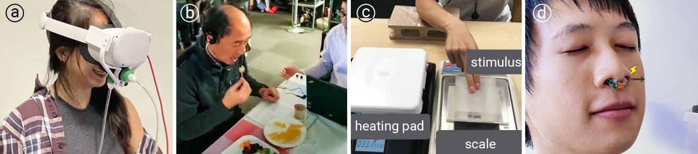
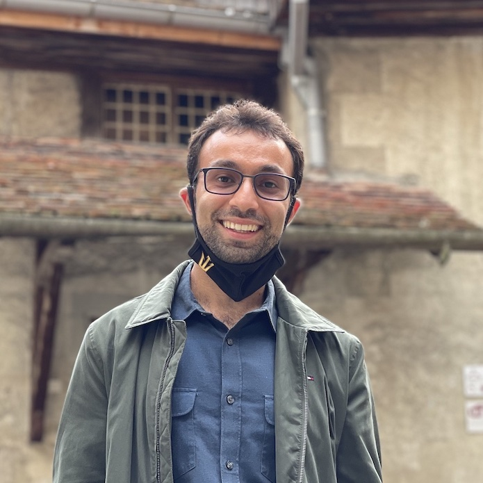
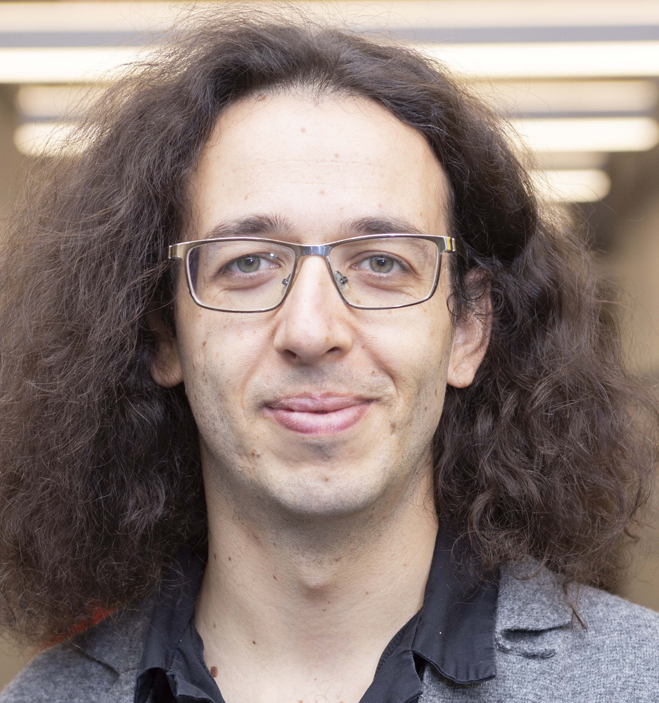
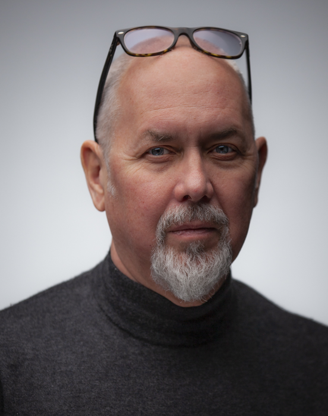
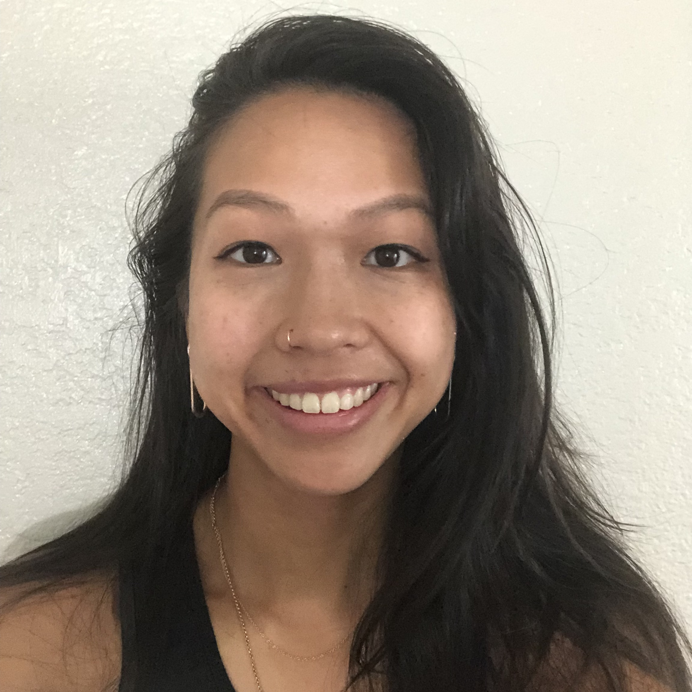
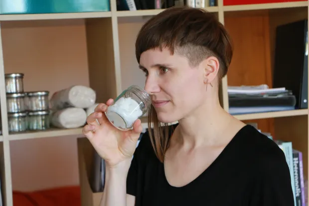

Call for Participation
The “Experiencing Smell, Taste, and Temperature Interfaces” workshop addresses the burgeoning subfield of chemo-
and thermo-sensory interfaces (smell, taste, and temperature) as well as their cultural contexts, usage, and resulting
experiences. This two-day, in-person workshop will offer an interdisciplinary forum of discussion for academics and
practitioners interested in leveraging these sensations.

Examples of smell, taste, and temperature hardware: (a) The Smell Engine; (b) Chewing Jockey; (c) temperature altering perceived softness ; and (d) stereo-smell sensing via electrical trigeminal stimulation .
Researchers and practitioners from academia, arts, and industry are invited to apply to the workshop by submitting a 1-4 page position or research paper in the ACM Master Article Submission Template single column format via the submission portal. The submission deadline is Friday, February 19, 2021 at 12:00pm (noon) PT. All applications will be reviewed by the workshop organizers and selection will be based on the paper’s quality, novelty, and fit for topics. Applicants will be notified of decisions on Friday, March 5, 2021 at 12:00pm (noon) PT. Accepted papers will have the option to be made available at the workshop webpage. Upon acceptance, participants are asked to produce a 5-minute introduction/paper presentation video, which will also be shared publicly on the workshop website. At least one author of each accepted paper must attend the workshop.
In line with STT 2023's goals, we will prioritize submissions that include in-person demonstrations or share tacit knowlege.
Schedule & Format
STT 2023 will be an in-person event consisting of demo sessions, panels, talks, and breakout discussions. All talks will be recorded and and made available. We also offer attendees access to an STT Discord Server with an #STT23 channel for additional communication.
| Day 1 |
| Time |
Schedule Item |
| 9:00-9:15 |
Introduction |
| 9:15-9:45 |
Social Icebreaker |
| 9:45-11:15 |
Panel 1: Sharing hardware and Democratizing research on STT |
| 11:15-11:30 |
Break |
| 11:30-13:30 |
Demonstration Sessions |
| 13:30-15:00 |
Session 2 - Societal implications for STT interfaces |
| 15:00-15:15 |
Break |
| 15:15-16:15 |
Group Activity |
| 18:00-19:00 |
Optional Dinner Social |
| Day 2 |
| Time |
Schedule Item |
| 10:00-10:20 |
Warm-Up Activity |
| 10:20-11:50 |
Session 3 - Sharing Techniques and Open-Source Smell Interfaces |
| 11:50-13:00 |
Lunch |
| 13:00-14:30 |
Session 4 - Sharing Techniques and Open-Source Taste Interfaces |
| 14:30-15:00 |
Break |
| 15:00-16:30 |
Session 5 - Sharing Techniques and Open-Source Thermal/Chemical Interfaces |
| 16:30-17:00 |
Break |
| 17:00-17:30 |
Panel 2 - Next Steps and Closing Remarkss |
Suggested Topics
The topics of interest for the workshop include, but are not limited to, the following:
- Sharing & open-sourcing experimental setups, hardware, or toolkits for smell, taste, and temperature.
- Techniques and methods to design and use multi-sensory technologies.
- Systems for recording, stimulating, and augmenting multi-sensory experiences.
- Assistive and environmental technologies using smell, taste, or temperature.
- Cultural aspects and contexts of multi-sensory interactions in everyday life and history, and how they influence and shape the technologies developed and their societal adoption.
We aim to additionally highlight and discuss open challenges in the field, which include, but are not limited to,
- Recommendations on sharing tacit knowledge.
- Sharing system designs: share how researchers overcome power limitations, wearable form factor constraints, network constraints, and compute resource utilization.
- Tackling the replication of this research: affects all these devices, which end up being often non-reducible, recordings and replay of experiences, precision, inter-, and intra-modality effects.
- Data sharing & modeling: how to share data across HCI researchers, benefit from recommended practices in data modeling, information dissemination, and evaluation methodologies.
- Perception: avoid sensory conflicts or take advantage of mixed senses, calibrate for over or under stimulation, predictably stimulate senses for a large and diverse population of people.
- Social implications: for example, questions around cultural adoption and equal access to these interfaces.
Organizers
Jas Brooks
Jas Brooks is a Ph.D. student in the Department of Computer Science at the University of Chicago. Their research expands the computer interface to engage with the chemical interactions of our bodies and investigates what this paradigm enables. These chemical interfaces have introduced new input and output methods, such as electrically induced stereo-smell (directional odor cues), chemically stimulated haptics, and more. Their research is covered in media publications like WIRED, Fast Company, Digital Trends, and IEEE Spectrum, and supported by a National Science Foundation Graduate Research Fellowship.
Website: jasbrooks.net
Alireza Bahremand

Alireza Bahremand is a Ph.D. student in the School of Electrical, Computer, and Energy Engineering at Arizona State University. His research focuses on adaptive software-hardware frameworks for multi-sensory digital embodiment. Recent works include the Smell Engine, a software-hardware framework that integrates olfactory stimuli into virtual environments, closely reflecting real-world olfactory sensations. As a contributing researcher to the ASU Dreamscape Learn partnership, Alireza is working with teams of professors and students to build educational multi-sensory XR experiences at scale.
Website: alirezabahremand.com
Pedro Lopes

Pedro Lopes is an Assistant Professor in Computer Science at the University of Chicago. Pedro focuses on integrating computer interfaces with the human body—exploring the interface paradigm that supersedes wearable computing. Some of these new integrated devices include: a device based on muscle stimulation that allows users to manipulate tools they never seen before or that accelerate their reaction time, or a device that leverages the nose to create an illusion of temperature. Pedro’s work also captured the interest of media, such as New York Times or NewScientist, and was exhibited at Ars Electronica and the World Economic Forum.
Website: lab.plopes.org
Christy Spackman
Christy Spackman is an Assistant Professor in the School for the Future of Innovation in Society as well as the Department of Arts, Media, and Engineering at Arizona State University. Her work focuses on how the sensory experiences of making, consuming, and disposing of food influence and are influenced by “technologies of taste,” oft-overlooked technologies and practices used to manage the sensory aspects of foods during production. Her current book uses this framework to examine how scientific and technological innovation changed the taste of water throughout the 20th-century. Christy holds training in molecular biology, food chemistry, and the culinary arts, allowing her to bridge disciplinary divides in research.
Website: christyspackman.com
Judith Amores
Judith Amores is a Research Fellow at the MGH/Harvard Medical School and a Research Affiliate at the MIT Media Lab, where she did her Ph.D. and master’s and helped run VR/AR at MIT as a co-president. She holds a multimedia engineering degree and has worked at Microsoft Research, URL Barcelona, and the Google Creative Lab. Her awards and publications include over 27 peer-reviewed research papers, two patents, a Facebook Graduate Fellowship, LEGO Foundation sponsored research, and was a finalist of the Innovation by Design Awards. She also received the Scent Innovator Award by CEW and IFF.
Website: judithamores.com
Hsin-Ni Ho
Hsin-Ni Ho is an Associate Professor in the Faculty of Design at Kyushu University, Japan. Her research interests include haptic perception, multimodal interactions, shitsukan (material quality) perception, and the development of haptic interfaces based on human perceptual properties. Hsin-Ni received her Ph.D. in Mechanical Engineering from the Massachusetts Institute of Technology in 2006 and worked as a research scientist in the NTT Communication Science Laboratories, Japan, from 2007 to 2021.
Website: sites.google.com/view/hohapticslab
Masahiko Inami
Masahiko Inami is a Professor at the University of Tokyo whose research asks, “What are the challenges in creating
interfaces that allow users to act and express their intentions intuitively?” Today’s computer systems are limited: they
only exploit visual and auditory sensations. However, daily life uses a variety of modalities, including some that come
in direct contact with our bodies. These later modalities can dramatically affect our ability to experience and express
ourselves. Masahiko designs a new generation of Human-Computer Integrated systems informed by modern
physiological understandings of sensation and perception, emerging electronic devices, and agile computational
methods.
Website: star.rcast.u-tokyo.ac.jp
Simon Niedenthal

Simon Niedenthal is an Associate Professor of Interaction Design at Malmö University, Sweden. His research
focuses upon olfactory interaction, game aesthetics, and the sensory dimensions of gameplay. Recent projects include
Nosewise, a collaboration with psychologists at Stockholm University exploring the potentials of smell training, and
Exerscent, an open source, low-cost olfactory interface for remote olfactory assessment and training. In 2008, Simon
defended his Ph.D. thesis Complicated Shadows: The Aesthetic Significance of Simulated Illumination in Digital Games, on
game lighting and its effect on the emotions and behavior of the player.
Website: Google Scholar
Jessica Lai

Simon Niedenthal is an Associate Professor of Interaction Design at Malmö University, Sweden. His research
focuses upon olfactory interaction, game aesthetics, and the sensory dimensions of gameplay. Recent projects include
Nosewise, a collaboration with psychologists at Stockholm University exploring the potentials of smell training, and
Exerscent, an open source, low-cost olfactory interface for remote olfactory assessment and training. In 2008, Simon
defended his Ph.D. thesis Complicated Shadows: The Aesthetic Significance of Simulated Illumination in Digital Games, on
game lighting and its effect on the emotions and behavior of the player.
Mason Manetta
Mason Manetta is an Electrical Engineering undergraduate researcher at Arizona State University’s Meteor Studio.
Mason focuses on researching and developing odor-producing computer interfaces for multimodal experiences. Their
most recent device enabled spatial smell perception in virtual reality. Additionally, Mason investigates energy-efficient
architectures for mobile and embedded image capture and medical imaging methods, particularly electrical impedance
tomography. Mason has published work at IEEE VR and MobiSys, which have been covered in media articles by ASU
and KJZZ public radio. Mason plans to pursue a doctoral degree.
Website: mcmanetta.github.io
Lauryn Mannigel

Lauryn Mannigel is an artist-researcher and curator based in Tempe (U.S.) and Berlin (D.E.). She is a Ph.D. student
in the Media Arts and Sciences program at Arizona State University. Since 2005, Mannigel has been tackling the issue
of the Western cultural dominance of visual aesthetics and epistemology by exploring primarily non-visual sensory
perception through diverse media technologies. Since 2015, Mannigel’s primary research interest has focused on the
political potential of smell. She exhibited artwork and spoke at conferences worldwide.
Website: laurynmannigel.me